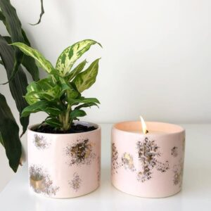
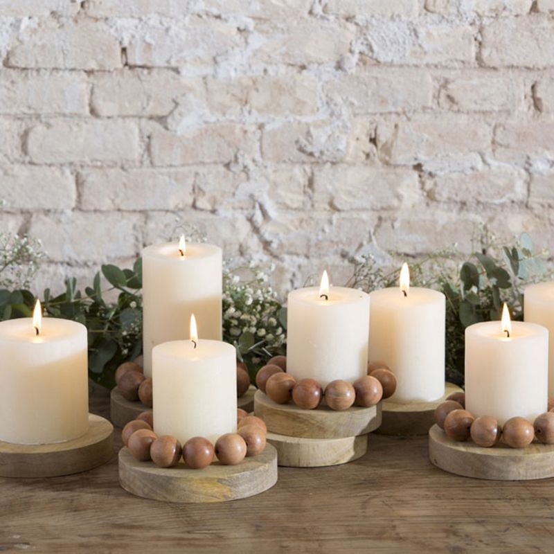

Las velas regalan un look íntimo y muy seductor tanto si se emplean en un rincón de la estancia como si se las hace protagonistas del espacio, por ejemplo colocadas en el centro de la mesa de comedor. Además, las aromáticas ofrecen unas fragancias suaves y delicadas para conquistar no solo la vista. Descubre estas ideas para conformar bellas composiciones con ellas.
Las velas fueron durante siglos la principal fuente de iluminación para los hogares del mundo entero. A día de hoy esa función ha pasado prácticamente a la historia, pero las velas siguen siendo uno de los básicos que todxs tenemos en casa. Y no es de extrañar… ¡pocos elementos decorativos son tan decorativos y prácticos!

Frutal, floral, fresco, oriental… ¡Para gustos, los olores! Además de hacer que tu hogar huela deliciosamente bien, las velas perfumadas son uno de los mejores trucos para eliminar los malos olores. Asimismo, un aroma agradable también aportará armonía a tu hogar.

Puedes combinar un mismo diseño de vela en varios tamaños, o bien jugar con otros elementos decorativos como jarrones o maceteros para crear un bonito conjunto.

Se trata de un producto bueno, bonito y barato. Podrás encontrar miles de modelos para todos los gustos con aromas, colores y diseños distintos, eso sí… ¡es muy difícil resistirse a sus encantos!